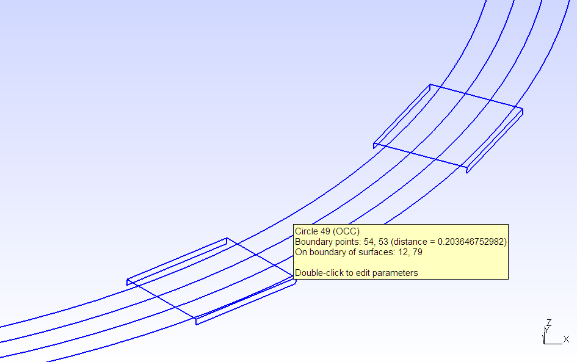

Geometry-Level Layout: Overview
DeviceLayout.jl lets you define shapes, place shapes in structures, and place references to structures inside other structures. We call this workflow "geometry-level layout", the most basic way of interacting with DeviceLayout.jl.
Within the DeviceLayout.jl type hierarchy, "shapes" are GeometryEntity subtypes like Polygon and Rectangle.
"Structures" are GeometryStructure subtypes like Cell, CoordinateSystem, Path, and Component. A structure can contain many entities (its "elements"), and it associates each entity with its own piece of metadata (generally specifying the "layer" that entity belongs to).
Structures may also contain references to other structures: the main type, StructureReference, wraps a structure together with a coordinate transformation that specifies its relative positioning and orientation within the containing structure.
To be more concrete, let's take a look at some examples that showcase different geometry-level workflows.
Entities: Transformations, Clipping, Styles
Starting with a rectangle, let's demonstrate transformations, polygon clipping, and a style.
using DeviceLayout, FileIO
import DeviceLayout: μm, nm
r = centered(Rectangle(20μm, 40μm))
# Create a second rectangle rotated by 90 degrees, positioned below the first
r2 = Align.below(Rotation(90°)(r), r, centered=true) # centered in x-coordinate
r3 = Align.above(r2, r) # Another copy of r2 above the first rectangle
dogbone = union2d([r, r2, r3]) # Boolean union of the three rectangles as a single entity
rounded_dogbone = Rounded(4μm)(dogbone) # Apply the Rounded styleDeviceLayout.StyledEntity{Unitful.Quantity{Float64, 𝐋, Unitful.ContextUnits{(μm,), 𝐋, Unitful.FreeUnits{(nm,), 𝐋, nothing}, nothing}}, ClippedPolygon{Unitful.Quantity{Float64, 𝐋, Unitful.ContextUnits{(μm,), 𝐋, Unitful.FreeUnits{(nm,), 𝐋, nothing}, nothing}}}, Rounded{Unitful.Quantity{Float64, 𝐋, Unitful.ContextUnits{(μm,), 𝐋, Unitful.FreeUnits{(nm,), 𝐋, nothing}, nothing}}}}(ClippedPolygon{Unitful.Quantity{Float64, 𝐋, Unitful.ContextUnits{(μm,), 𝐋, Unitful.FreeUnits{(nm,), 𝐋, nothing}, nothing}}}(Top-level PolyNode with 1 immediate children.), Rounded{Unitful.Quantity{Float64, 𝐋, Unitful.ContextUnits{(μm,), 𝐋, Unitful.FreeUnits{(nm,), 𝐋, nothing}, nothing}}}(4.0 μm, 0.0, 4.0 μm, 0.001, Point{Unitful.Quantity{Float64, 𝐋, Unitful.ContextUnits{(μm,), 𝐋, Unitful.FreeUnits{(nm,), 𝐋, nothing}, nothing}}}[], false))It's a bit hard to read, but the result is a StyledEntity{T,U,S} with three type parameters: the coordinate type T = typeof(1.0μm}, the underlying entity type U = ClippedPolygon{T}, and the style S = Rounded{T}—that is, it is a GeometryEntity that composes the result of a polygon clipping (Boolean) operation with a GeometryEntityStyle specifying rules for rounding that entity.
What's notable here is that rounded_dogbone only describes the vertices of the dogbone polygon and the rounding radius—in particular, it has not done any calculations to find a discretization of the rounded corners.
Cells and Rendering
The simplest workflow for generating 2D layouts is to render entities directly to a Cell. (That's why we used it for the "quick start" example.)
The Cell abstraction is meant to correspond to the GDSII backend, which uses Polygon as its only primitive entity type. In other words, rendering a complicated entity like our rounded_dogbone to a Cell will convert it to a Polygon representation of the same shape—just a list of points.
By default, render!(::Cell, ...) discretizes a Rounded curve with absolute tolerance of 1nm—that's the furthest any point on the true curve is from any line segment on the discretized version. This can be controlled in different ways, like providing the atol keyword to render!, or by composing the ToTolerance style on top of the Rounded style. Internally, an atol keyword then gets passed to the method to_polygons(::AbstractPolygon{S}, ::Rounded{T}; kwargs...).
cr = Cell("dogbone", nm)
render!(cr, rounded_dogbone, GDSMeta(1))
elements(cr)1-element Vector{Polygon{Unitful.Quantity{Float64, 𝐋, Unitful.ContextUnits{(nm,), 𝐋, Unitful.FreeUnits{(nm,), 𝐋, nothing}, nothing}}}}:
Polygon{Unitful.Quantity{Float64, 𝐋, Unitful.ContextUnits{(nm,), 𝐋, Unitful.FreeUnits{(nm,), 𝐋, nothing}, nothing}}}(Point{Unitful.Quantity{Float64, 𝐋, Unitful.ContextUnits{(nm,), 𝐋, Unitful.FreeUnits{(nm,), 𝐋, nothing}, nothing}}}[(-16000.0 nm,-20000.0 nm), (-16178.825816 nm,-20003.999333 nm), (-16357.294038999999 nm,-20015.989336 nm), (-16535.047794000002 nm,-20035.946032 nm), (-16711.731631 nm,-20063.829514999998 nm), (-16886.992243 nm,-20099.584026999997 nm), (-17060.479165 nm,-20143.138070999998 nm), (-17231.845483 nm,-20194.404552999997 nm), (-17400.74852 nm,-20253.280958000003 nm), (-17566.850527 nm,-20319.649551000002 nm) … (-12433.149473 nm,-19680.350448999998 nm), (-12599.251479999999 nm,-19746.719041999997 nm), (-12768.154516999999 nm,-19805.595447000003 nm), (-12939.520835 nm,-19856.861929000002 nm), (-13113.007757 nm,-19900.415973000003 nm), (-13288.268369000001 nm,-19936.170485000002 nm), (-13464.952206 nm,-19964.053968 nm), (-13642.705961000001 nm,-19984.010664 nm), (-13821.174184 nm,-19996.000667 nm), (-14000.0 nm,-20000.0 nm)])Our Rounded ClippedPolygon has been reduced to a mere Polygon, as necessary to represent it within the GDSII format. It's also what we need in order to use the SVG backend:
save("dogbone.svg", cr; layercolors=Dict(0 => (0, 0, 0, 1), 1 => (1, 0, 0, 1)));Our ClippedPolygon isn't doing anything special, here—it might as well be a Polygon in this example. The ClippedPolygon type mainly exists to represent polygons with holes without having to generate "keyhole" polygons as required by the GDSII format. This ends up being convenient for other backends that don't want keyhole polygons as well as for applying different styles to different boundary or hole contours.
Paths and References
We can now create references to our cell, place those references in a structure, and render the whole structure to another cell. Let's do that with a Path structure, as in our quick-start example:
cref = sref(cr, Point(0.0μm, 0.0μm)) # sref is short for "structure [or single] reference"
p = Path(μm, metadata=GDSMeta())
sty = launch!(p)
straight!(p, 500μm, sty)
turn!(p, π / 2, 150μm)
straight!(p, 500μm)
launch!(p)
turnidx = Int((length(p) + 1) / 2) - 1 # the first straight segment of the path
simplify!(p, turnidx .+ (0:2))
attach!(p, cref, (60μm):(60μm):((pathlength(p[turnidx])) - 60μm), i=turnidx)
c = Cell("decoratedpath", nm)
render!(c, p)
refs(c)19-element Vector{DeviceLayout.GeometryReference{S, T} where {S, T<:DeviceLayout.Cells.AbstractCell}}:
CellReference{Unitful.Quantity{Float64, 𝐋, Unitful.ContextUnits{(nm,), 𝐋, Unitful.FreeUnits{(nm,), 𝐋, nothing}, nothing}}, Cell{Unitful.Quantity{Float64, 𝐋, Unitful.ContextUnits{(nm,), 𝐋, Unitful.FreeUnits{(nm,), 𝐋, nothing}, nothing}}}}(Cell "dogbone" with 1 els, 0 refs, (1.3e6 nm,554380.5509807655 nm), false, 1.0, 1.5707963267948966)
CellReference{Unitful.Quantity{Float64, 𝐋, Unitful.ContextUnits{(nm,), 𝐋, Unitful.FreeUnits{(nm,), 𝐋, nothing}, nothing}}, Cell{Unitful.Quantity{Float64, 𝐋, Unitful.ContextUnits{(nm,), 𝐋, Unitful.FreeUnits{(nm,), 𝐋, nothing}, nothing}}}}(Cell "dogbone" with 1 els, 0 refs, (1.3e6 nm,494380.55098076555 nm), false, 1.0, 1.5707963267948966)
CellReference{Unitful.Quantity{Float64, 𝐋, Unitful.ContextUnits{(nm,), 𝐋, Unitful.FreeUnits{(nm,), 𝐋, nothing}, nothing}}, Cell{Unitful.Quantity{Float64, 𝐋, Unitful.ContextUnits{(nm,), 𝐋, Unitful.FreeUnits{(nm,), 𝐋, nothing}, nothing}}}}(Cell "dogbone" with 1 els, 0 refs, (1.3e6 nm,434380.55098076555 nm), false, 1.0, 1.5707963267948966)
CellReference{Unitful.Quantity{Float64, 𝐋, Unitful.ContextUnits{(nm,), 𝐋, Unitful.FreeUnits{(nm,), 𝐋, nothing}, nothing}}, Cell{Unitful.Quantity{Float64, 𝐋, Unitful.ContextUnits{(nm,), 𝐋, Unitful.FreeUnits{(nm,), 𝐋, nothing}, nothing}}}}(Cell "dogbone" with 1 els, 0 refs, (1.3e6 nm,374380.55098076555 nm), false, 1.0, 1.5707963267948966)
CellReference{Unitful.Quantity{Float64, 𝐋, Unitful.ContextUnits{(nm,), 𝐋, Unitful.FreeUnits{(nm,), 𝐋, nothing}, nothing}}, Cell{Unitful.Quantity{Float64, 𝐋, Unitful.ContextUnits{(nm,), 𝐋, Unitful.FreeUnits{(nm,), 𝐋, nothing}, nothing}}}}(Cell "dogbone" with 1 els, 0 refs, (1.3e6 nm,314380.55098076555 nm), false, 1.0, 1.5707963267948966)
CellReference{Unitful.Quantity{Float64, 𝐋, Unitful.ContextUnits{(nm,), 𝐋, Unitful.FreeUnits{(nm,), 𝐋, nothing}, nothing}}, Cell{Unitful.Quantity{Float64, 𝐋, Unitful.ContextUnits{(nm,), 𝐋, Unitful.FreeUnits{(nm,), 𝐋, nothing}, nothing}}}}(Cell "dogbone" with 1 els, 0 refs, (1.3e6 nm,254380.55098076552 nm), false, 1.0, 1.5707963267948966)
CellReference{Unitful.Quantity{Float64, 𝐋, Unitful.ContextUnits{(nm,), 𝐋, Unitful.FreeUnits{(nm,), 𝐋, nothing}, nothing}}, Cell{Unitful.Quantity{Float64, 𝐋, Unitful.ContextUnits{(nm,), 𝐋, Unitful.FreeUnits{(nm,), 𝐋, nothing}, nothing}}}}(Cell "dogbone" with 1 els, 0 refs, (1.3e6 nm,194380.55098076552 nm), false, 1.0, 1.5707963267948966)
CellReference{Unitful.Quantity{Float64, 𝐋, Unitful.ContextUnits{(nm,), 𝐋, Unitful.FreeUnits{(nm,), 𝐋, nothing}, nothing}}, Cell{Unitful.Quantity{Float64, 𝐋, Unitful.ContextUnits{(nm,), 𝐋, Unitful.FreeUnits{(nm,), 𝐋, nothing}, nothing}}}}(Cell "dogbone" with 1 els, 0 refs, (1.2991875105902583e6 nm,134408.76259299737 nm), false, 1.0, 1.4666666666666668)
CellReference{Unitful.Quantity{Float64, 𝐋, Unitful.ContextUnits{(nm,), 𝐋, Unitful.FreeUnits{(nm,), 𝐋, nothing}, nothing}}, Cell{Unitful.Quantity{Float64, 𝐋, Unitful.ContextUnits{(nm,), 𝐋, Unitful.FreeUnits{(nm,), 𝐋, nothing}, nothing}}}}(Cell "dogbone" with 1 els, 0 refs, (1.2813392829715037e6 nm,77543.1663089585 nm), false, 1.0, 1.0666666666666669)
CellReference{Unitful.Quantity{Float64, 𝐋, Unitful.ContextUnits{(nm,), 𝐋, Unitful.FreeUnits{(nm,), 𝐋, nothing}, nothing}}, Cell{Unitful.Quantity{Float64, 𝐋, Unitful.ContextUnits{(nm,), 𝐋, Unitful.FreeUnits{(nm,), 𝐋, nothing}, nothing}}}}(Cell "dogbone" with 1 els, 0 refs, (1.2427554704604605e6 nm,32116.910883457793 nm), false, 1.0, 0.6666666666666667)
CellReference{Unitful.Quantity{Float64, 𝐋, Unitful.ContextUnits{(nm,), 𝐋, Unitful.FreeUnits{(nm,), 𝐋, nothing}, nothing}}, Cell{Unitful.Quantity{Float64, 𝐋, Unitful.ContextUnits{(nm,), 𝐋, Unitful.FreeUnits{(nm,), 𝐋, nothing}, nothing}}}}(Cell "dogbone" with 1 els, 0 refs, (1.1895276086715304e6 nm,5301.803215415419 nm), false, 1.0, 0.2666666666666667)
CellReference{Unitful.Quantity{Float64, 𝐋, Unitful.ContextUnits{(nm,), 𝐋, Unitful.FreeUnits{(nm,), 𝐋, nothing}, nothing}}, Cell{Unitful.Quantity{Float64, 𝐋, Unitful.ContextUnits{(nm,), 𝐋, Unitful.FreeUnits{(nm,), 𝐋, nothing}, nothing}}}}(Cell "dogbone" with 1 els, 0 refs, (1.13e6 nm,0.0 nm), false, 1.0, 0.0)
CellReference{Unitful.Quantity{Float64, 𝐋, Unitful.ContextUnits{(nm,), 𝐋, Unitful.FreeUnits{(nm,), 𝐋, nothing}, nothing}}, Cell{Unitful.Quantity{Float64, 𝐋, Unitful.ContextUnits{(nm,), 𝐋, Unitful.FreeUnits{(nm,), 𝐋, nothing}, nothing}}}}(Cell "dogbone" with 1 els, 0 refs, (1.07e6 nm,0.0 nm), false, 1.0, 0.0)
CellReference{Unitful.Quantity{Float64, 𝐋, Unitful.ContextUnits{(nm,), 𝐋, Unitful.FreeUnits{(nm,), 𝐋, nothing}, nothing}}, Cell{Unitful.Quantity{Float64, 𝐋, Unitful.ContextUnits{(nm,), 𝐋, Unitful.FreeUnits{(nm,), 𝐋, nothing}, nothing}}}}(Cell "dogbone" with 1 els, 0 refs, (1.01e6 nm,0.0 nm), false, 1.0, 0.0)
CellReference{Unitful.Quantity{Float64, 𝐋, Unitful.ContextUnits{(nm,), 𝐋, Unitful.FreeUnits{(nm,), 𝐋, nothing}, nothing}}, Cell{Unitful.Quantity{Float64, 𝐋, Unitful.ContextUnits{(nm,), 𝐋, Unitful.FreeUnits{(nm,), 𝐋, nothing}, nothing}}}}(Cell "dogbone" with 1 els, 0 refs, (950000.0 nm,0.0 nm), false, 1.0, 0.0)
CellReference{Unitful.Quantity{Float64, 𝐋, Unitful.ContextUnits{(nm,), 𝐋, Unitful.FreeUnits{(nm,), 𝐋, nothing}, nothing}}, Cell{Unitful.Quantity{Float64, 𝐋, Unitful.ContextUnits{(nm,), 𝐋, Unitful.FreeUnits{(nm,), 𝐋, nothing}, nothing}}}}(Cell "dogbone" with 1 els, 0 refs, (890000.0 nm,0.0 nm), false, 1.0, 0.0)
CellReference{Unitful.Quantity{Float64, 𝐋, Unitful.ContextUnits{(nm,), 𝐋, Unitful.FreeUnits{(nm,), 𝐋, nothing}, nothing}}, Cell{Unitful.Quantity{Float64, 𝐋, Unitful.ContextUnits{(nm,), 𝐋, Unitful.FreeUnits{(nm,), 𝐋, nothing}, nothing}}}}(Cell "dogbone" with 1 els, 0 refs, (830000.0 nm,0.0 nm), false, 1.0, 0.0)
CellReference{Unitful.Quantity{Float64, 𝐋, Unitful.ContextUnits{(nm,), 𝐋, Unitful.FreeUnits{(nm,), 𝐋, nothing}, nothing}}, Cell{Unitful.Quantity{Float64, 𝐋, Unitful.ContextUnits{(nm,), 𝐋, Unitful.FreeUnits{(nm,), 𝐋, nothing}, nothing}}}}(Cell "dogbone" with 1 els, 0 refs, (770000.0 nm,0.0 nm), false, 1.0, 0.0)
CellReference{Unitful.Quantity{Float64, 𝐋, Unitful.ContextUnits{(nm,), 𝐋, Unitful.FreeUnits{(nm,), 𝐋, nothing}, nothing}}, Cell{Unitful.Quantity{Float64, 𝐋, Unitful.ContextUnits{(nm,), 𝐋, Unitful.FreeUnits{(nm,), 𝐋, nothing}, nothing}}}}(Cell "dogbone" with 1 els, 0 refs, (710000.0 nm,0.0 nm), false, 1.0, 0.0)The entities making up the Path are rendered into Polygons, but the GeometryReferences stored in the Path are simply placed into our Cell as references, since they're already Cell references. Note that we have many references to the same Cell called "dogbone" here—it hasn't been copied.
If you're paying close attention, you might have noticed that Path handles entity metadata slightly differently than a GeometryStructure like Cell. The Path's elements—the launchers and CPW-styled segments—are all associated with a single piece of metadata, rather than allowing the possibility of different metadata for each. As a structure, though, the Path can still have references to other structures with all sorts of different metadata associated with their elements.
Let's see how it looks:
save("dogbone_path.svg", flatten(c); layercolors=Dict(0 => (0, 0, 0, 1), 1 => (1, 0, 0, 1)));The SVG backend only draws the top-level Cell, so it's necessary to flatten the cell before saving. flatten traverses references to place all entities in a single Cell, applying transformations as necessary.
(For further examples, we'll hide the line that saves to SVG just to display a cell.)
Of course, we can also add Cell references directly to a Cell, for example to apply a global rotation:
c_wrapper = Cell("wrapper", nm)
addref!(c_wrapper, sref(c, rot=90°))Coordinate Systems
We've been working with Cells in the above examples because they're convenient for displaying immediately, but in practice, you'll usually want to work with CoordinateSystem. The two are very similar—both are subtypes of AbstractCoordinateSystem—but where Cell is tied to the GDSII backend, CoordinateSystem is the "DeviceLayout.jl-native" geometry structure.
In particular, any GeometryEntity can be placed in a CoordinateSystem, like our rounded_dogbone from before. (If Polygon is the only Cell primitive, then every GeometryEntity is a CoordinateSystem primitive.) That way, backend-specific decisions about how to render it can be deferred. This will become clear when we get to the SolidModel backend below.
csr = CoordinateSystem("dogbone", nm)
place!(csr, rounded_dogbone, SemanticMeta(:bridge))
elements(csr)[1]DeviceLayout.StyledEntity{Unitful.Quantity{Float64, 𝐋, Unitful.ContextUnits{(nm,), 𝐋, Unitful.FreeUnits{(nm,), 𝐋, nothing}, nothing}}, ClippedPolygon{Unitful.Quantity{Float64, 𝐋, Unitful.ContextUnits{(nm,), 𝐋, Unitful.FreeUnits{(nm,), 𝐋, nothing}, nothing}}}, Rounded{Unitful.Quantity{Float64, 𝐋, Unitful.ContextUnits{(μm,), 𝐋, Unitful.FreeUnits{(nm,), 𝐋, nothing}, nothing}}}}(ClippedPolygon{Unitful.Quantity{Float64, 𝐋, Unitful.ContextUnits{(nm,), 𝐋, Unitful.FreeUnits{(nm,), 𝐋, nothing}, nothing}}}(Top-level PolyNode with 1 immediate children.), Rounded{Unitful.Quantity{Float64, 𝐋, Unitful.ContextUnits{(μm,), 𝐋, Unitful.FreeUnits{(nm,), 𝐋, nothing}, nothing}}}(4.0 μm, 0.0, 4.0 μm, 0.001, Point{Unitful.Quantity{Float64, 𝐋, Unitful.ContextUnits{(μm,), 𝐋, Unitful.FreeUnits{(nm,), 𝐋, nothing}, nothing}}}[], false))place! can only be used with CoordinateSystems. It does the same thing as render!, which still works, but the verb is less ambiguous. If you know you're only working with CoordinateSystems, it may be clearer to use place!, since render! suggests rendering to primitives—which can mean different things depending on the "backend".
We're also free to use any type of metadata to describe layers, not just GDSMeta. In this case, we use SemanticMeta with the layer symbol :bridge.
You can do just about anything with a CoordinateSystem that you could do with a Cell, and some things you couldn't. For example, rendering a Path to a Cell converted it into Polygons—a Cell can only hold references to other Cells, not arbitrary structures. CoordinateSystem doesn't have that limitation:
csref = sref(csr, Point(0.0μm, 0.0μm))
p = Path(nm, metadata=SemanticMeta(:metal_negative))
sty = launch!(p, trace1=4μm, gap1=4μm)
straight!(p, 500μm, sty)
turn!(p, π / 2, 150μm)
straight!(p, 500μm)
launch!(p, trace1=4μm, gap1=4μm)
turnidx = Int((length(p) + 1) / 2) - 1 # the first straight segment of the path
simplify!(p, turnidx .+ (0:2))
attach!(p, csref, (60μm):(60μm):((pathlength(p[turnidx])) - 60μm), i=turnidx)
cs = CoordinateSystem("decoratedpath", nm)
addref!(cs, p) # either render! or place! would do the same thing here
refs(cs)1-element Vector{DeviceLayout.GeometryReference}:
StructureReference{Unitful.Quantity{Float64, 𝐋, Unitful.ContextUnits{(nm,), 𝐋, Unitful.FreeUnits{(nm,), 𝐋, nothing}, nothing}}, Path{Unitful.Quantity{Float64, 𝐋, Unitful.ContextUnits{(nm,), 𝐋, Unitful.FreeUnits{(nm,), 𝐋, nothing}, nothing}}}}(Path{Unitful.Quantity{Float64, 𝐋, Unitful.ContextUnits{(nm,), 𝐋, Unitful.FreeUnits{(nm,), 𝐋, nothing}, nothing}}}("path\$3239", (0.0 nm,0.0 nm), 0.0°, SemanticMeta(:metal_negative, 1, 1), DeviceLayout.Paths.Node{Unitful.Quantity{Float64, 𝐋, Unitful.ContextUnits{(nm,), 𝐋, Unitful.FreeUnits{(nm,), 𝐋, nothing}, nothing}}}[Straight by 155000.0 nm styled as Open termination of CPW with width 300000.0 nm, gap 150000.0 nm, and rounding radius 5000.0 nm, Straight by 245000.0 nm styled as CPW with width 300000.0 nm and gap 150000.0 nm, Straight by 250000.0 nm styled as Tapered CPW with initial width 300000.0 nm and initial gap 150000.0 nm tapers to a final width 4000.0 nm and final gap 4000.0 nm, 3 segments styled as Compound style with 19 decorations, Straight by 250000.0 nm styled as Tapered CPW with initial width 4000.0 nm and initial gap 4000.0 nm tapers to a final width 300000.0 nm and final gap 150000.0 nm, Straight by 245000.0 nm styled as CPW with width 300000.0 nm and gap 150000.0 nm, Straight by 155000.0 nm styled as Open termination of CPW with width 300000.0 nm, gap 150000.0 nm, and rounding radius 5000.0 nm], CoordinateSystem "cs_path$3239" with 0 els, 0 refs), (0.0 nm,0.0 nm), false, 1.0, 0.0)Of course, eventually we'll want to turn this into a Cell. Since we were using named SemanticMeta layers, we just need to specify how to convert them to GDSMeta:
layer_record = Dict(:bridge => GDSMeta(1), :metal_negative => GDSMeta())
cell = Cell(cs; map_meta=m -> layer_record[layer(m)])
# Could also say cell = render!(Cell("newcell", nm), cs; map_meta=...)
save(
"cs_dogbone_path.svg",
flatten(cell);
layercolors=Dict(0 => (0, 0, 0, 1), 1 => (1, 0, 0, 1))Solid Models
We can also render the same CoordinateSystem to a 3D model. DeviceLayout.jl uses Open CASCADE Technology, an open-source 3D geometry library, through the API provided by Gmsh, a 3D finite element mesh generator.
Even though our geometry is purely 2D, we can generate a SolidModel by providing a map from layer name to position in the third dimension (zmap) as well as a list of Booleans, extrusions, and other operations to perform after rendering the 2D entities (postrender_ops).
It's not really recommended to do this directly from geometry-level layout. There are tools in the schematic-driven layout interface that handle some of the complexity for you. We'll have an analogous overview later that showcases all of that, but for the sake of demonstration, here's a simple (relatively) manual example. (Making bridges in particular can be a bit involved, so there's a helper method to generate the postrendering operations for a basic "staple" configuration.)
We'll add a few more rectangles to help with 3D operations—one that will intersect with our "bridge" pattern to create a 3D "staple", one to extrude the substrate volume, and one to define a larger volume above and below the substrate.
place!(csr, centered(Rectangle(30μm, 15μm)), :base)
place!.(cs, offset(bounds(cs), 200μm), :substrate)
place!(cs, bounds(cs), :simulated_area)
zmap = (m) -> layer(m) == :simulated_area ? -1000μm : 0μm
postrender_ops = [
("substrate_extrusion", SolidModels.extrude_z!, ("substrate", -500μm))
("simulated_area_extrusion", SolidModels.extrude_z!, ("simulated_area", 2000μm))
("metal", SolidModels.difference_geom!, ("substrate", "metal_negative"))
SolidModels.staple_bridge_postrendering(; base="base", bridge="bridge")
]
sm = SolidModel("model", overwrite=true)
SolidModels.gmsh.option.setNumber("General.Verbosity", 0)
render!(sm, cs; zmap=zmap, postrender_ops=postrender_ops);We can look at the current model in the Gmsh GUI:
SolidModels.gmsh.fltk.run()Let's zoom in on the CPW bend:
One notable thing about this solid model is that the arcs in the bent CPW are exact circular arcs. When we render to a Cell, all shapes get discretized into Polygons. But since we were working with our "native" CoordinateSystem, curved shapes like the CPW bend can be rendered as native curves in the solid geometry kernel. This not only keeps model size down but also allows Gmsh to make better meshes.
Moreover, when DeviceLayout.jl renders path segments and certain other entities, it automatically sets mesh sizing information to help Gmsh make better meshes. (You can also annotate entities with the MeshSized style to provide such information manually.)
SolidModels.gmsh.model.mesh.generate(3)Compare this to what happens if we render to polygons first.
layer_record = Dict(
:substrate => GDSMeta(0),
:simulated_area => GDSMeta(1),
:metal_negative => GDSMeta(2),
:base => GDSMeta(3),
:bridge => GDSMeta(4)
)
cell = Cell(cs; map_meta=m -> layer_record[layer(m)])
### Fix for duplicate consecutive points on certain rounded polygons
### GDS doesn't care but Gmsh/OCCT do care
flatten!(cell)
cell.elements .= Polygon.([unique(points(poly)) for poly in elements(cell)])
###
lyr(name) = layername(layer_record[Symbol(name)])
gds_postrender_ops = [
("substrate_extrusion", SolidModels.extrude_z!, (lyr("substrate"), -500μm))
("simulated_area_extrusion", SolidModels.extrude_z!, (lyr("simulated_area"), 2000μm))
("metal", SolidModels.difference_geom!, (lyr("substrate"), lyr("metal_negative")))
SolidModels.staple_bridge_postrendering(; base=lyr("base"), bridge=lyr("bridge"))
]
sm = SolidModel("model", overwrite=true)
render!(sm, cell; zmap=zmap, postrender_ops=gds_postrender_ops)
SolidModels.gmsh.model.mesh.generate(2) # 3D meshing may hit an error—have to be careful about postrenderingNot only is this render! call much slower, but the mesh is forced to use every point on the 1nm-tolerance-discretization of the curve. Without any help from the rich information in the original geometry, Gmsh also uses its default settings—resulting in a very poor mesh.
Data flow diagrams
It may be easier to understand the flow of data with a diagram. Here's one for the "quick start" workflow, working directly with Cells:
And here's a diagram for the typical CoordinateSystem workflow: